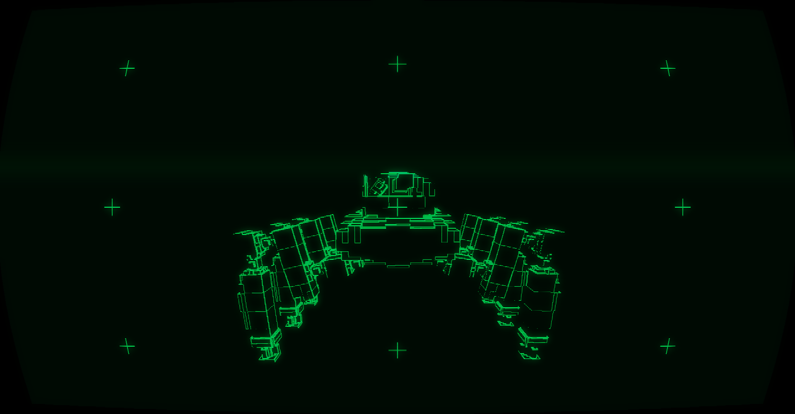
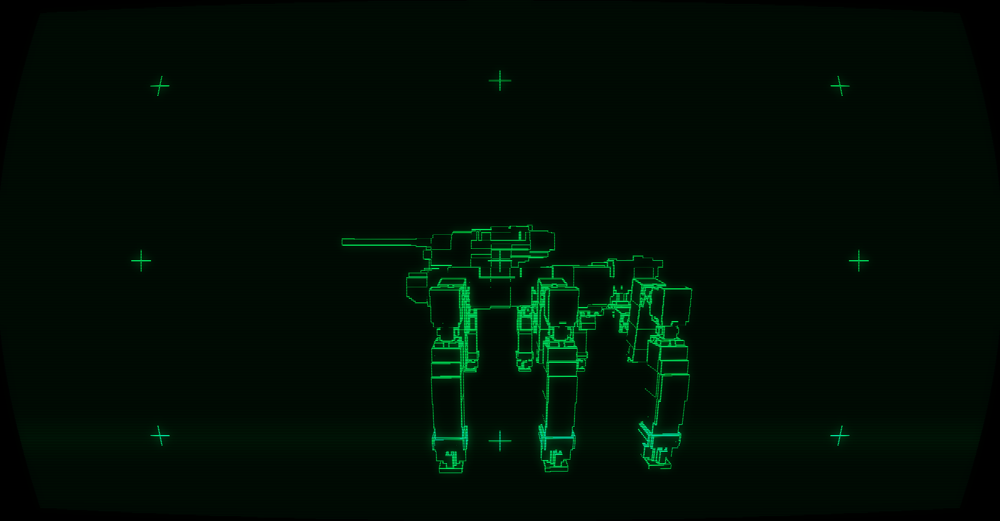
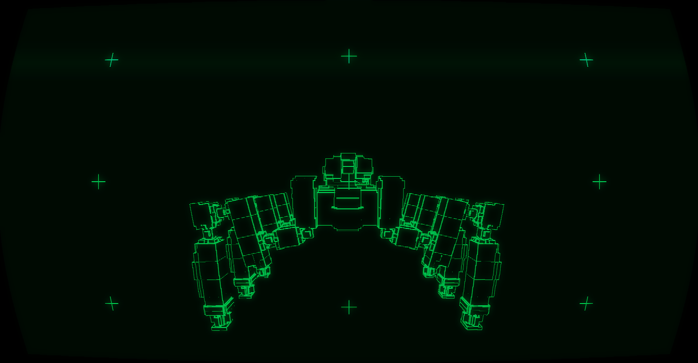

> TAIPAN-61 // LIGHT_SCOUT
КОМПОНОВКА: 1-ая компоновка разработки "Taipan"
Основные характеристики:
> Класс: Легкая разведывательная машина.
> Внесения в компоновку: 1-я. Инженеры впервые опробовали внедрение большого топливного бака для увеличенного запаса хода из за установленного форсированного двигателя.
> Особенности: Уменьшенная башня прототипа 0-ой компоновки с соблюдением характерной ромбовидной формы проекта "Taipan".
> Вооружение: Малый-средний калибр. Машина рассчитана для быстрых залпов (до 16 снарядов) и отхода от ответного огня.
> Статус: Малосерийное производство. Высокие потери на поле боя из-за слабой брони и вооружения, но машина остаётся в строю ради уникальных разведывательных и вспомогательных задач.
Отчёт 1-ой испытательной бригады:
«Это не танк, это пуля. Если ты видишь врага — ты уже должен быть за его спиной.
Броня? Её нет, но скосы спасают от дурных выстрелов. Главное — не дать им попасть тебе за спину.
Страшно, но азартно».
— Оператор-101, 1-я испытательная бригада.
Тактика применения:
Машина предназначена для ведения разведки боем и вскрытия засад противника. Благодаря высокой скорости и маневренности, 61-й может быстро менять позицию и уходить из-под огня. В городских условиях рекомендуется действовать осторожно, используя скорость для внезапных атак с флангов, а также манёвренность и малый вес для взбирания на крыши домов.

FRONT_VIEW

SIDE_VIEW

REAR_VIEW